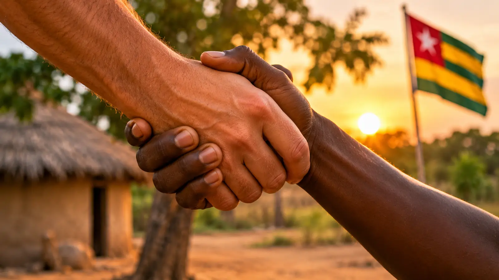
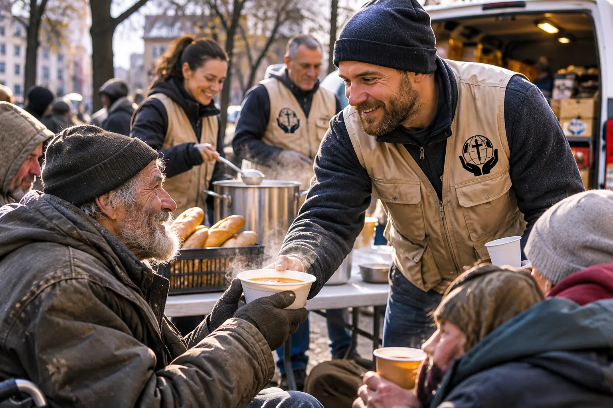
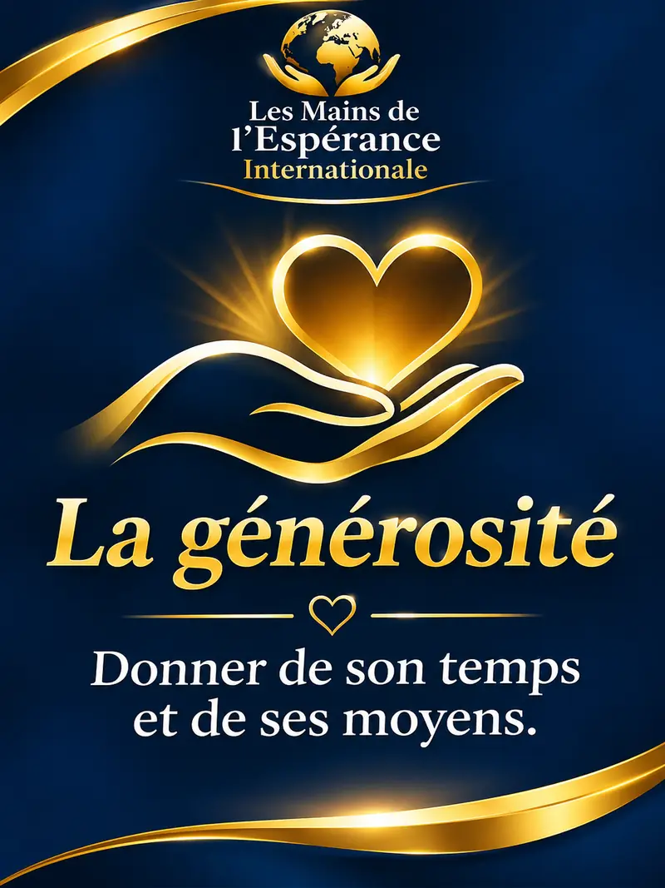
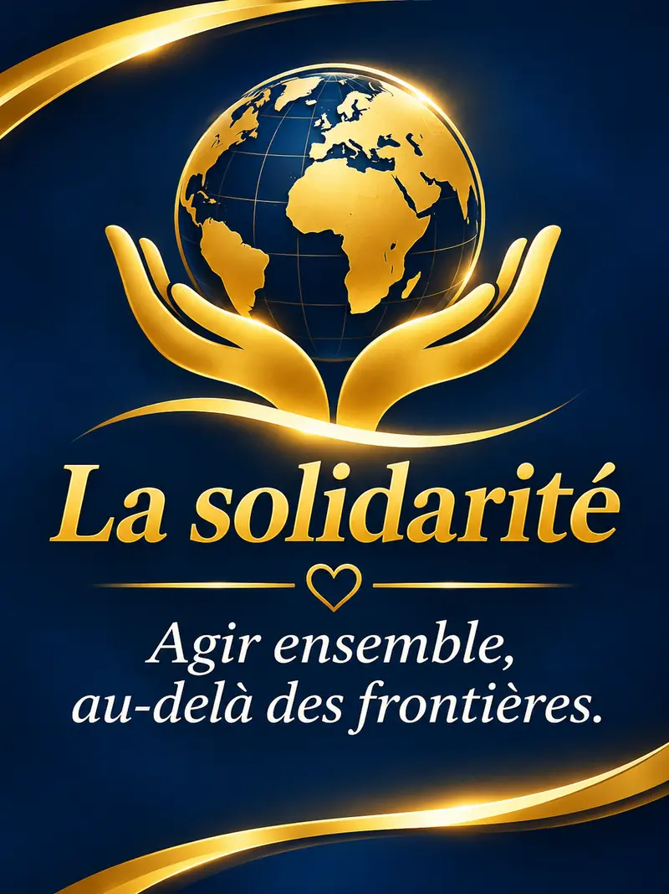
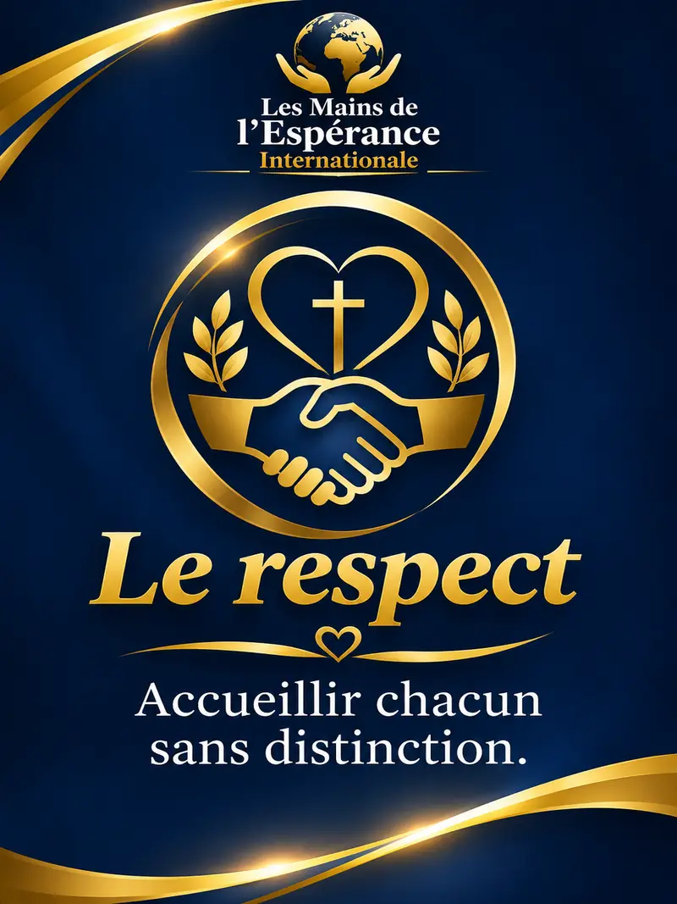
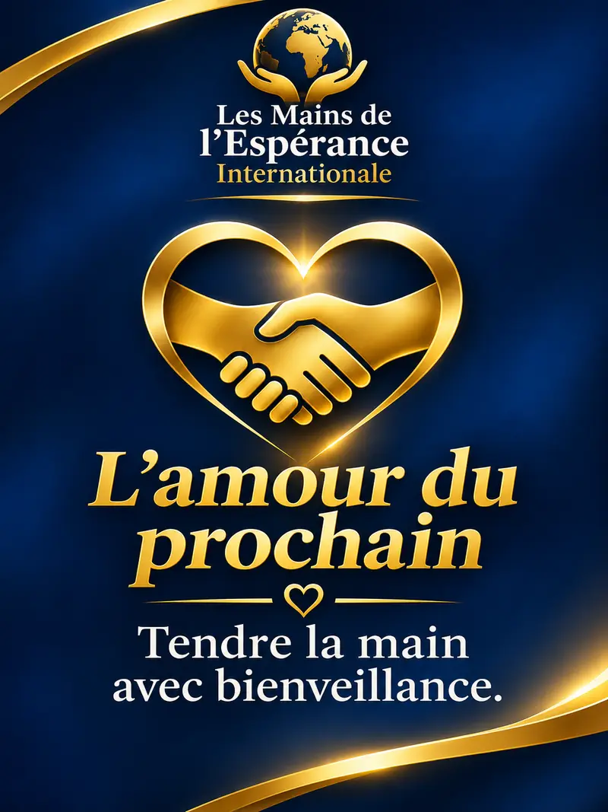
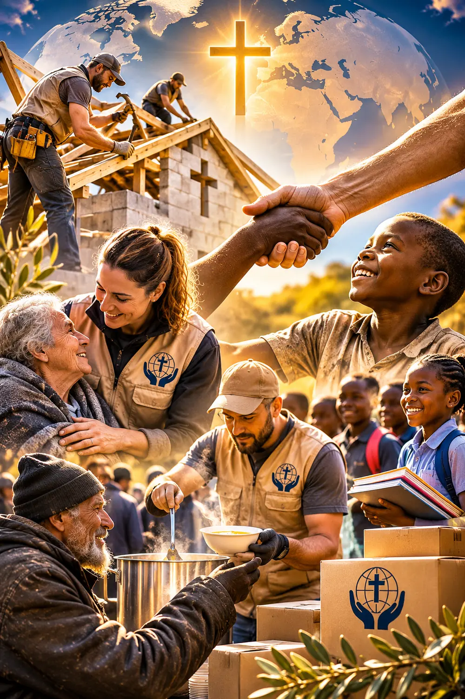

Notre première mission
Soutenir ceux qui donnent de leur temps
Accompagner les bénévoles et les missionnaires, et contribuer au financement de leurs missions : transport, hébergement, restauration et déplacements.
Qui sommes-nous ?
Une association humanitaire et solidaire, inspirée par les valeurs chrétiennes.
Notre point de départ
Comment permettre à des personnes désireuses d’aider les autres de partir accomplir leurs missions humanitaires lorsqu’elles ne disposent pas des moyens financiers nécessaires ?
Notre engagement ›Notre histoire
Les Mains de l’Espérance Internationale est une association née en novembre 2026. De nombreux bénévoles et missionnaires sont prêts à donner de leur temps, de leur énergie et de leurs compétences pour venir en aide aux populations dans le besoin.
Pourtant, malgré toute leur bonne volonté, le coût des déplacements, des billets d’avion, de l’hébergement et des frais liés aux missions représente souvent un obstacle important.
C’est en prenant conscience de cette réalité, notamment à travers la préparation d’une mission humanitaire au Togo, qu’est née l’idée de créer une association capable de participer au financement de ces déplacements et d’accompagner les bénévoles dans leur engagement.

Une solidarité élargie
Notre volonté était de mettre en place une structure permettant de récolter des fonds grâce à des initiatives solidaires : ventes de produits, événements, manifestations et différentes actions organisées tout au long de l’année.
Mais au fil de notre réflexion, une autre évidence s’est imposée : des personnes ont également besoin d’aide près de chez nous.
Nous avons alors décidé d’élargir notre projet afin de développer, en parallèle des missions internationales, des actions de solidarité locales : aide aux personnes en difficulté, initiatives de partage, événements solidaires et soutien aux plus démunis.

Notre conviction
La solidarité n’a pas de frontières, et chacun peut, à sa manière, devenir une main tendue vers ceux qui en ont besoin.
Notre histoire ne fait que commencer.En quelques chiffres
3
grandes prioritésMissions internationales, enfance en danger, personnes âgées dépendantes.
4
valeursGénérosité, solidarité, respect et amour du prochain.
100 %
des bénéfices netsde notre boutique solidaire consacrés à nos actions et projets.
7
jours au Togopour notre première mission de reconnaissance, en février 2027.
Notre engagement
Les Mains de l’Espérance Internationale s’engage à transformer la générosité et la solidarité en actions concrètes, au service des personnes qui en ont le plus besoin.
Notre première mission
Accompagner les bénévoles et les missionnaires, et contribuer au financement de leurs missions : transport, hébergement, restauration et déplacements.
À l’international
Construction et rénovation d’orphelinats, de lieux d’accueil, de bâtiments communautaires et d’églises, dans un esprit de coopération, de respect et de partage.
En France
Priorité à la protection de l’enfance en danger et au soutien des personnes âgées en situation de dépendance.
Nos valeurs
Au cœur de l’association
Inspirées par notre foi chrétienne, elles nous encouragent à tendre la main à ceux qui en ont besoin, avec amour, respect et générosité, en France comme à l’international.




Notre foi
Notre engagement trouve ses racines dans les enseignements de Jésus-Christ : aimer son prochain, tendre la main aux plus faibles et donner sans attendre en retour.
Nous souhaitons mettre ces valeurs en pratique à travers des actions ouvertes à tous, sans distinction d’origine, de croyance ou de situation.
Notre plus grande ambition est simple : unir les bonnes volontés pour que l’espérance devienne une réalité dans la vie de ceux qui en ont besoin.

Notre boutique solidaire Bientôt
Pour donner vie à nos engagements, nous développons notre propre marque de vêtements et une boutique en ligne solidaire. L’intégralité des bénéfices nets sera consacrée aux actions et aux projets de l’association, autour de nos trois grandes priorités.
Priorité 1
En soutenant les bénévoles, les missionnaires et les projets de construction et de rénovation.
Priorité 2
Avec une attention particulière aux enfants victimes de pédocriminalité et d’abus sexuels : soutien d’associations spécialisées et accompagnement juridique des victimes.
Priorité 3
En soutenant des initiatives qui améliorent leur quotidien et préservent leur dignité.
La répartition des fonds sera déterminée en fonction des besoins et des projets soutenus. Acheter un vêtement, c’est aussi contribuer à une action solidaire.
Notre engagement de transparence
Et cette confiance mérite une transparence totale. Les Mains de l’Espérance Internationale s’engage à publier chaque année sur son site internet un bilan de ses activités et de ses finances.
Notre objectif : permettre à chacun de comprendre l’utilisation des fonds collectés et de mesurer concrètement l’impact de sa générosité.
Ensemble
Qu’il s’agisse d’un don, d’un achat solidaire, d’un partenariat ou de quelques heures de bénévolat, chaque geste compte.